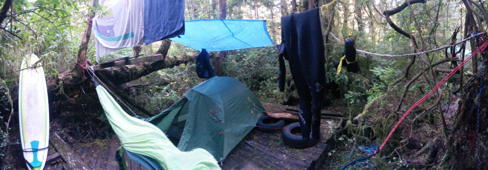

Lion in Kanada
Innerhalb von fuenf Monaten bin ich an der Westkueste vom Sueden in den Norden und zurueck gereist. Ohne Plan gings in Vancouver los. Doch nach vier Tagen stand fest: Es geht nach Williams Lake.

Von Williams Lake ging es drei Stunden mit dem Auto richtung Westen, tief in die Wildnis. Dort habe ich bei Chris wwoofing gemacht. Chris lebt Mitten im Wald. Bei der Ankunft haben wir Grizzlybaerfussspuren entdeckt. Nur zirka 500 Meter entfert von unserer neuen Unterkunft. Ziemlich gruselig. Mein erster Gedanke war: die sehen ja aus wie Menschenfuesse... so laenglich!
Izaro, Lasse und ich haben viele coole Dinge gemacht. Kettensaegenmasaka, Baeume pellen und Abends im Holzfaellerstil gepokert. Ausserdem haben wir Zeug gebaut. Eine wundervolle Zeit!

Awesome!

Am Ende des Monats haben wir eine Wanderung gemacht. Zuerst wollte Izaro nicht mitkommen, wegen den Tieren und weil es keinen Weg gab. Aber der Daene und ich konnten sie ueberzeugen. Wir kaempften uns durch den Busch und erreichten die Spitze!!
Harry(braun) und Badger(schwarz) waren fast immer dabei. Eine Nacht haben wir nach einer Party von Chris Freunden mit den Beiden im Truck gepennt. Schoen zu sehen, wie sich Tiere entspannen, wenn sie das machen duerfen, was in ihrer Natur steckt.
Badger wurde von seinen alten Besitzern geschlagen und festgebunden. Nachdem Chris ihn aufgenommen hat, war er Maennern gegenueber sehr agressiv. Bei ihr hat er dann viele freundliche Maenner getroffen, hatte die Freiheit sich total frei im Wald zu bewegen und die Aufgabe zusammen mit Harry Baeren vom Grundstuck zu jagen.
Nun ist Badger ziemlich alt und jedes mal, wenn Harry bellend in den Wald rennt, versucht er mitzuhalten, um seine Aufgabe zu erfuellen. Lasse und mich mag er.
Badger wurde von seinen alten Besitzern geschlagen und festgebunden. Nachdem Chris ihn aufgenommen hat, war er Maennern gegenueber sehr agressiv. Bei ihr hat er dann viele freundliche Maenner getroffen, hatte die Freiheit sich total frei im Wald zu bewegen und die Aufgabe zusammen mit Harry Baeren vom Grundstuck zu jagen.
Nun ist Badger ziemlich alt und jedes mal, wenn Harry bellend in den Wald rennt, versucht er mitzuhalten, um seine Aufgabe zu erfuellen. Lasse und mich mag er.


Von Chris aus bin ich mit einer Mitfahrgelegenheit weiter in den Norden. Danke fuer die coole Zeit an alle Freunde von Chirs, ihr sebst und Izaro und Lasse. Mit einem Zwischenstop in Prince George bin ich in Whitehorse gelandet.
In der Naehe von Carcross, an der Grenze zu Alaska, habe ich wieder gewwooft. Zusammen mit Danny und Tony hab ich dort wieder Zeug gebaut. Nagelpistolen sind der Hammer! Trotz des Bauens blieb sehr viel Zeit zum Lesen, Fischen und alleine sein.


Tony isn ziemlich rauer Typ. Er hat Kontakte zu einer Drogen/Motorrad-Gang, ist Ex-Militaer, hat gerne mal Dreier, hat fuer jeden Menschen den er im Krieg toeten musste ein Tatto und zwei Toechter. Ausserdem ist sein Handyklingelton ein Shotgun sound! Heeeeftig!
Es wird Zeit fuer ein weiteres Abendteuer! Lass uns Kanu fahren. Yeaa! Schon mal voher ne lange kanutour gemacht? Neee. Was muss man da denn auch schon gross machen, n bisschen paddeln? Ha, das waer doch gelacht! .... ... falsch gelacht.. aehh ich mein: falsch gedacht!

In Wahrheit muss man noch nicht mal paddeln, weil die Stroemung so stark ist! Mein erstes Camp wurde sogar von nem Regenbogen verschoenert! Ohhhh was ist denn das da hinten? Ist das Gold oder n Baerchen?

Wenn man allerdings auf dem See Laberge ist, hat man keine Stroemung mehr, dafuer aber Wetterfronten. Toll! Scheisse! Ich hasse den verkackten See Laber-was-auch-immer!!!

Verabschiedung vom See Lager-lass-mich-endlich-in-ruhe-hab-die-Schnauze-voll-vom-See. (schon wieder ne Wetterfront da hinten.... arrrrrr)

Die restliche Tour hat sich nach dem See wie eine Autobahn angefuehlt. Ich liebe Stroemung. Sie passt auch voll in meine Philosophie fuers Leben.
Die Qual ueber den See hat sich tatsaechlich bezahlt gemacht. Die Waelder enden nicht, die Berge werden ganz langsam groesser und groesser je weiter man an sie heran treibt und man fangt an sich als Teil des Flusses zu fuehlen.
Die Qual ueber den See hat sich tatsaechlich bezahlt gemacht. Die Waelder enden nicht, die Berge werden ganz langsam groesser und groesser je weiter man an sie heran treibt und man fangt an sich als Teil des Flusses zu fuehlen.

Five Finger Rapids!

Dawson City is awesome! Abgesehen von diesem geilen Gefuehl nach 10 Tagen angekommen zu sein und sich ein Hotelzimmer zu goennen, ist Dawson eine sehr liebensvolle, kreative und freie Stadt. Dort hab ich Caveman Bill kennengelernt. Er ist vor vielen Jahren nach Dawson gekommen. Dann hat er so ne gemuetliche Hoehle gefunden. Gleich auf der anderen Seite vom Fluss. Nun lebt er da. Im Winter, wenn alles kalt und zugefrohren ist, halten die schweren Steine der Hoehle sie, einmal erhitzt, zwei Wochen lang warm.
Ich habe sehr viele sehr coole Menschen getroffen. Und alle sind happy, weil alle gerade im Urlaub sind, nice! Mit Maggie und Sarah(Bild) hab ich auf dem Dawson City Music Festival gearbeitet. Vielen lieben Dank fuer die wunderschoene Zeit!

Der noerdlichste Punkt meiner gesamten Reise. Ca. eine Stunde Autofahrt noerdlich von Dawson City. Gegen den Nebel hat auch kein Regenschirm geschuetzt.

Vom noerdlichsten Punkt sollte es nun ganz in den Sueden gehen. Zum Shambhala Festival!!! Und obwohl auf dieser Reise viel passiert ist, hab ich fast keine Bilder. Aber mal n Paar Storys.
Sarah hat mich mit nach Whitehorse genommen. Die 10-Tage Kanufahrt innerhalb weniger Autostunden 'mal eben' runter geduest. Is wie teleportieren. Von Whitehorse aus bin ich aber nicht mehr weggekommen. Ausserdem hab ich vergessen Geld auf meine Kreditkarte zu ueberweisen, weshalb ich ganz einfach mal nichts mehr hatte. Richtiges scheiss Gefuehl. Wie kommt man an Essen? Muss ich unter ner Bruecke schlafen?
Alles wirklich nicht so aufregend wie ich mir sowas vorgestellt haette. Da man kein Geld hat, kann man ja auch nichts machen, was alles sehr langweilig und einfach nur kacke macht. Ich hab dann n Campingplatz gefunden auf dem ich schlafen konnte und spaeter bezahlen. Und nach zwei Tagen war dann auch endlich das Geld wieder da. Definitiv n dickes down meiner Reise!
Bin dann mit nem Indianer weiter richtung Sueden getrampt. Nur hat der Typ, der super freundlich war, dann n Joint geraucht. Was seinen Fahrstil allerdings positiv beeinflusst hat, weshalb ich weiter bei ihm mitgefahren bin. Ehrlich gesagt ist er sicherer gefahren als Sarah, die JEDE Kurve ziemlich hart genommen hat!
Am Ende der Fahrt hab ich ihn noch auf den Joint angesprochen. Seine Aussage dazu war: 'Gotta be safe, ya. I ve a daughter at the backseat!' Wo tatsaechlich seine acht Jahre alte Tochter sass, die die ganze Zeit friedlich geschlafen hat.
Dann bin ich durch die Rocky Mountains getrampt. Sehr schoen aber auch viel Regen. Highlight der Rockys war aufjeden die eine E-bike tour die ich gemacht hab! Es macht SSSSSSOOOOOOOOOOo viel Spass!!!!!!!
Sarah hat mich mit nach Whitehorse genommen. Die 10-Tage Kanufahrt innerhalb weniger Autostunden 'mal eben' runter geduest. Is wie teleportieren. Von Whitehorse aus bin ich aber nicht mehr weggekommen. Ausserdem hab ich vergessen Geld auf meine Kreditkarte zu ueberweisen, weshalb ich ganz einfach mal nichts mehr hatte. Richtiges scheiss Gefuehl. Wie kommt man an Essen? Muss ich unter ner Bruecke schlafen?
Alles wirklich nicht so aufregend wie ich mir sowas vorgestellt haette. Da man kein Geld hat, kann man ja auch nichts machen, was alles sehr langweilig und einfach nur kacke macht. Ich hab dann n Campingplatz gefunden auf dem ich schlafen konnte und spaeter bezahlen. Und nach zwei Tagen war dann auch endlich das Geld wieder da. Definitiv n dickes down meiner Reise!
Bin dann mit nem Indianer weiter richtung Sueden getrampt. Nur hat der Typ, der super freundlich war, dann n Joint geraucht. Was seinen Fahrstil allerdings positiv beeinflusst hat, weshalb ich weiter bei ihm mitgefahren bin. Ehrlich gesagt ist er sicherer gefahren als Sarah, die JEDE Kurve ziemlich hart genommen hat!
Am Ende der Fahrt hab ich ihn noch auf den Joint angesprochen. Seine Aussage dazu war: 'Gotta be safe, ya. I ve a daughter at the backseat!' Wo tatsaechlich seine acht Jahre alte Tochter sass, die die ganze Zeit friedlich geschlafen hat.
Dann bin ich durch die Rocky Mountains getrampt. Sehr schoen aber auch viel Regen. Highlight der Rockys war aufjeden die eine E-bike tour die ich gemacht hab! Es macht SSSSSSOOOOOOOOOOo viel Spass!!!!!!!
Ja und dann... das Shambhala. So viele Eindruecke koennte ich nicht mal mit ganz viel Muehe in einen einiger massen kurzen Text fassen. Darum hier mal n paar Ausschnitte.
Grosses electronisches 5-Tage Festival. Nahezu jeder ist irgendwie verkleidet. Jeder hat sooo viel Liebe zu vergeben, dass man nicht anders kann, als auch jeden zu lieben. Extrem gute Musik, sehr viele Drogen. Viel Kunst und viele Frauen die unglaublich gut im HoolaHoopreifen schwingen sind.
Ich hoffe, dass ich ganz bald es wieder schaffe zu diesem besonderen Ort zu kommen!
Auf dem Festival hab ich super nette Leute aus Vancouver Island kennen gelernt. Wir waren exakt auf einem Flow, wie es deanna beschrieben hat.
Ach dieser Moment, als wir Nachts noch am Strand, etwas abgelegen vom Festival gechillt haben. Die Lichter, die von den Buehnen durch die Baeume gestrahlt sind und sich im Wasser reflektiert haben. Der Bass, der es droehnend bis zu uns geschafft hat. Und die Knicklichter, die meinem Rave schamanische Zuege verliehen haben.
Ach dieser Moment, als wir Nachts noch am Strand, etwas abgelegen vom Festival gechillt haben. Die Lichter, die von den Buehnen durch die Baeume gestrahlt sind und sich im Wasser reflektiert haben. Der Bass, der es droehnend bis zu uns geschafft hat. Und die Knicklichter, die meinem Rave schamanische Zuege verliehen haben.
Ich bin mit ihnen dann mit nach Vancouver Island gefahren, weil es gerade so schoen in meinen Flow gepasst hat. Dort hab ich eine nette wwoofing-famile kennengelernt und endlich mein
Projekt Baumhaus in Angriff genommen.
Hier hab ich knueppel-harte Arbeit geleistet. Belohung: super viel Eis!
Das Baumhaus habe ich parallel zu meiner Arbeit auf der Farm gebaut. Vier Tage knueppeln, Drei Tage bauen!
Ich habe zwei Wochen gebraucht, um mich fuer einen Bauort zu entscheiden.(eine ganz kurze Zeit habe ich ueberlegt in einem Nativereservoir zu bauen, bis mich jemand darauf
hingewiesen hat, dass es vllt nicht so eine gute Idee ist, wenn ein weisser Europaeer einfach aufkruetzt und ein Haus auf ihrem Land baut...) Letztendlich habe ich dann in
einem Wald gebaut, in dem Forstwirtschaft betrieben wird aber fast nie jemand ist.
Dort bin ich mit einem Fahrrad und ein paar Werkzeugen von einem alten Mann, der auch auf der Farm lebte wie ich, hingefahren. Und dann Schritt fuer Schritt einfach gebaut. Einfach loslegen. Is wie Lego spielen, nur dass wenn du verkackst, du vllt stirbst. Neeeee so schlimm natuerlich auch nicht aber n bisschen aufpassen musste man halt einfach schon.
Nachdem ich innerhalb von einem Monat fertiggebaut hab, hab ich eine Woche drin gelebt. Und um ehrlich zu sein... es hatte schon was da jetzt so im Wald zu hausen aber es war zwischendurch auch echt ziemlich langweilig. Also weiter... weiter nach Tofino!
Dort bin ich mit einem Fahrrad und ein paar Werkzeugen von einem alten Mann, der auch auf der Farm lebte wie ich, hingefahren. Und dann Schritt fuer Schritt einfach gebaut. Einfach loslegen. Is wie Lego spielen, nur dass wenn du verkackst, du vllt stirbst. Neeeee so schlimm natuerlich auch nicht aber n bisschen aufpassen musste man halt einfach schon.
Nachdem ich innerhalb von einem Monat fertiggebaut hab, hab ich eine Woche drin gelebt. Und um ehrlich zu sein... es hatte schon was da jetzt so im Wald zu hausen aber es war zwischendurch auch echt ziemlich langweilig. Also weiter... weiter nach Tofino!
Tofino ist bekannt als guter Surfspot und zum Whalewatching. Und fuer Leute die cool sind(wie z.B. Leute die ihr eigenes Baumhaus bauen :D) ist Tofino auch bekannt fuer Poolsland!
Das ist ein nicht ganz legaler Campingplatz, der irgendwie was kostet und irgendwie auch nicht. Jedenfalls trifft man dort ne menge Hippies und Surfer. Aus einer Woche geplanten Aufenthalts in Tofino sind deshalb dann auch drei Wochen geworden.
Das ist ein nicht ganz legaler Campingplatz, der irgendwie was kostet und irgendwie auch nicht. Jedenfalls trifft man dort ne menge Hippies und Surfer. Aus einer Woche geplanten Aufenthalts in Tofino sind deshalb dann auch drei Wochen geworden.

So unfassbar cool Tofino auch ist zaehle ich insgeheim die Tage, wann endlich mein Flug in die Heimat geht.
Kanada war unglaublich aber es gab auch einge Zeitpunkte die kacke waren. z.B. wenn ich in Yukon bin und kein Geld hab; oder wenn ich auf ner Farm arbeite und mein Host gerade mal n schlechte Tag hat und ein Arsch ist. Oder wenn ich einfach nichts zu tun hab, weil ich in der Gegend nicht so viele Leute kenne.
Ausserdem ist mir etwas aufgefallen: ich habe viel danach gesucht etwas besonders zu erleben. Darum wollte ich keine Turisachen machen. Ne Wanderung machen, is doch voll oede... Aber was sonst machen? Erstens sind Wanderungen und Kanuturen und Surfen super geil. Zweitens braucht es Zeit, Geld und Menschen, wenn man was 'besonders' machen will. Ein Baumhaus in kurzer Zeit alleine wird halt nur ne Platte in dem Baeumen mit nem Zelt drauf und kein Palast mit Affenbutler.
Wenn man was besonders machen will, muss man vieeel Zeit und Energie reinstecken. Am besten man studiert es und macht sich ein Businessplan, damit das ganze auch funktioniert.
Darum freue ich mich sehr zurueck zu fliegen und meinen Master zu machen. Ich will gut werden.
Ausserdem freue ich mich unendlich meine Familie wieder zu sehen.
Ich liebe sie!
Kanada war unglaublich aber es gab auch einge Zeitpunkte die kacke waren. z.B. wenn ich in Yukon bin und kein Geld hab; oder wenn ich auf ner Farm arbeite und mein Host gerade mal n schlechte Tag hat und ein Arsch ist. Oder wenn ich einfach nichts zu tun hab, weil ich in der Gegend nicht so viele Leute kenne.
Ausserdem ist mir etwas aufgefallen: ich habe viel danach gesucht etwas besonders zu erleben. Darum wollte ich keine Turisachen machen. Ne Wanderung machen, is doch voll oede... Aber was sonst machen? Erstens sind Wanderungen und Kanuturen und Surfen super geil. Zweitens braucht es Zeit, Geld und Menschen, wenn man was 'besonders' machen will. Ein Baumhaus in kurzer Zeit alleine wird halt nur ne Platte in dem Baeumen mit nem Zelt drauf und kein Palast mit Affenbutler.
Wenn man was besonders machen will, muss man vieeel Zeit und Energie reinstecken. Am besten man studiert es und macht sich ein Businessplan, damit das ganze auch funktioniert.
Darum freue ich mich sehr zurueck zu fliegen und meinen Master zu machen. Ich will gut werden.
Ausserdem freue ich mich unendlich meine Familie wieder zu sehen.
Ich liebe sie!